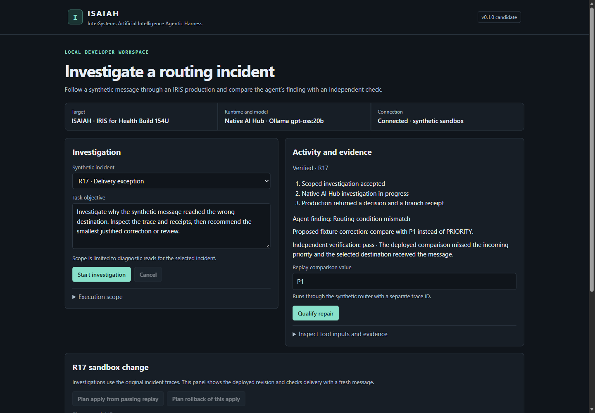

Media gallery
Application captures from synthetic IRIS for Health AI Hub Build 154U runs.
R17 and R29 demonstration
Provisional demonstration edit — genuine recorded synthetic workflow. Manually recorded presentation footage is planned.
The opening retains an earlier result. The new R17 completion appears after a disclosed recording gap. R29 comes from a separate run. The edit uses crops and holds. It shows the earlier v0.1.0 interface.
29.64 seconds · 1440 × 900 · On-screen captions · No voiceover.
Download the WebM · Pinned GitHub copy
Read the demonstrated outcomes
R17 follows the Diagnostic branch. The deployed predicate mismatches the incoming priority, and Standard delivery is recorded. R29 follows the Review branch. Express is selected but unavailable, and the message falls back to Standard. The evidence close-ups show independent verification of the diagnoses. Apply and rollback are covered in the qualification record.
R17 decision and verification
